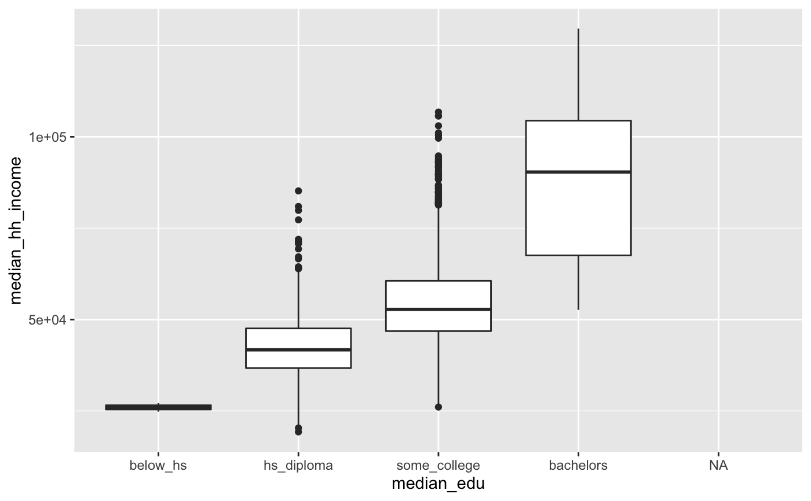

county.RdData for 3143 counties in the United States. See the
county_complete data set for additional variables.
county
A tibble with 3143 observations on the following 15 variables.
County names.
State names.
FIPSFIPS number.
Population in 2000.
Population in 2010.
Federal spending per capita
Percent of population in poverty.
Homeownership rate, 2006-2010.
Percent of housing units in multi-unit structures, 2006-2010.
Income per capita income.
Median income.
age_5Percent of population under 5 years of age.
age_18Percent of population under 18 years of age.
femalePercent of population that is female.
densityThe number of people per square mile.
whitePercent of population that is white.
blackPercent of population that is black.
pphAverage persons per household.
These data were collected from http://quickfacts.census.gov/qfd/states/ (no longer available) and its accompanying pages.
~~ OpenIntro Statistics, openintro.org ~~
